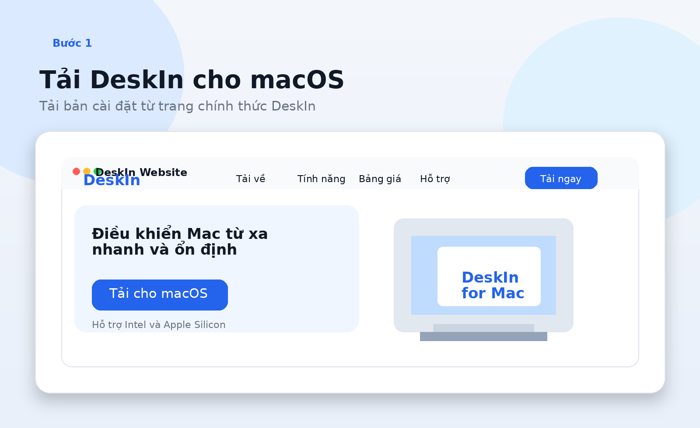
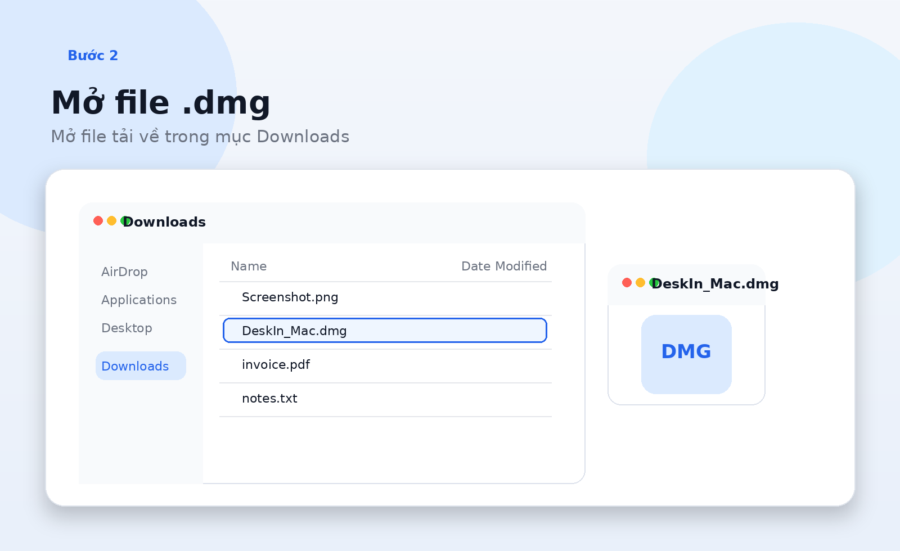
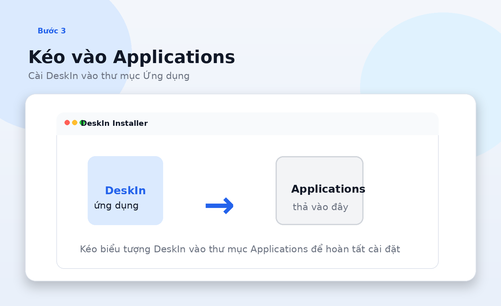
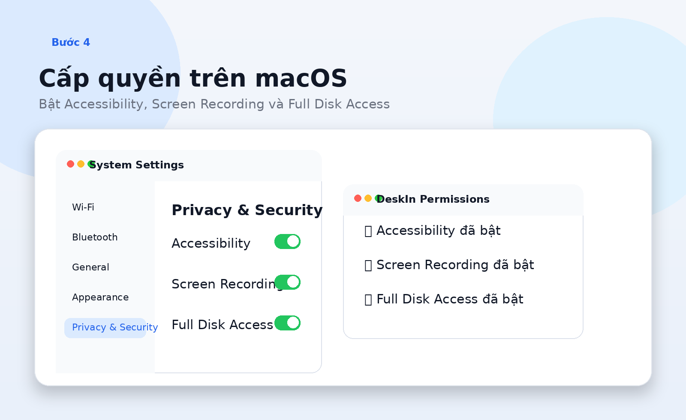
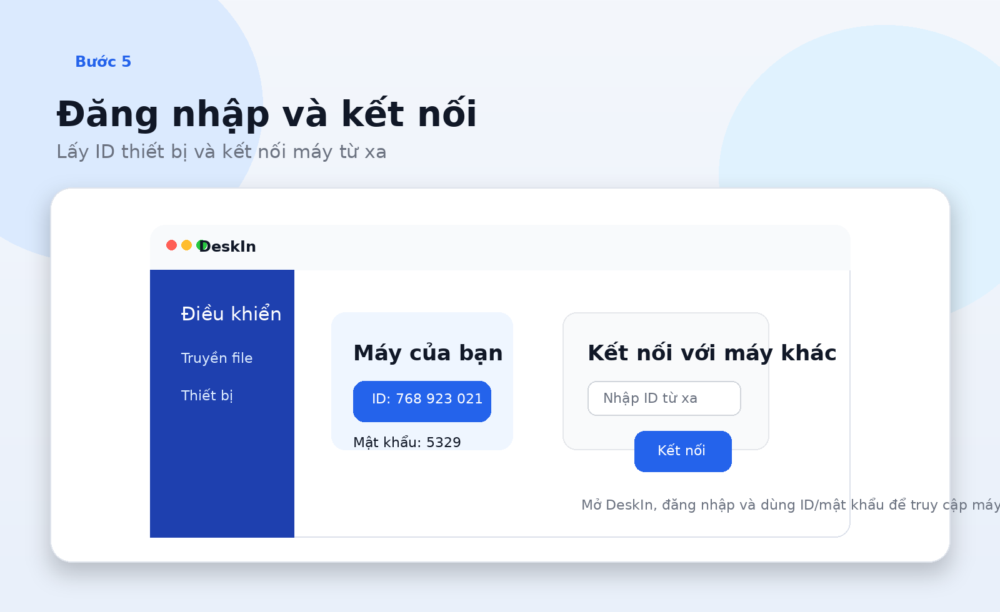

Bước 1
Tải DeskIn cho macOS
Vào trang tải chính thức của DeskIn và chọn bản dành cho Mac để đảm bảo đúng phiên bản mới.
- Mở website DeskIn.
- Chọn bản macOS.
- Chờ file tải xong.
DeskIn là phần mềm điều khiển máy tính từ xa. Trên macOS, ngoài việc cài ứng dụng, bạn còn cần cấp một số quyền hệ thống như Accessibility và Screen Recording để điều khiển máy đầy đủ.

Vào trang tải chính thức của DeskIn và chọn bản dành cho Mac để đảm bảo đúng phiên bản mới.
Sau khi tải xong, mở Finder và vào thư mục Downloads để chạy file cài DeskIn.

Đây là cách cài phổ biến trên macOS. Sau khi sao chép xong, bạn có thể mở DeskIn từ Applications hoặc Launchpad.

Để điều khiển từ xa đầy đủ, bạn cần bật các quyền mà DeskIn yêu cầu trong phần bảo mật của macOS.

Sau khi cài xong, mở DeskIn, đăng nhập và dùng ID của thiết bị để kết nối từ xa.
